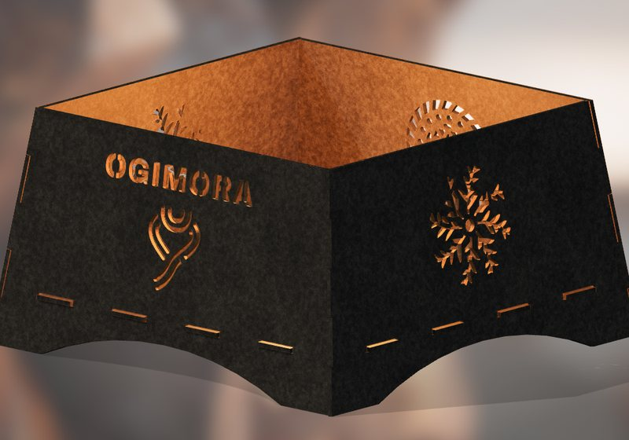
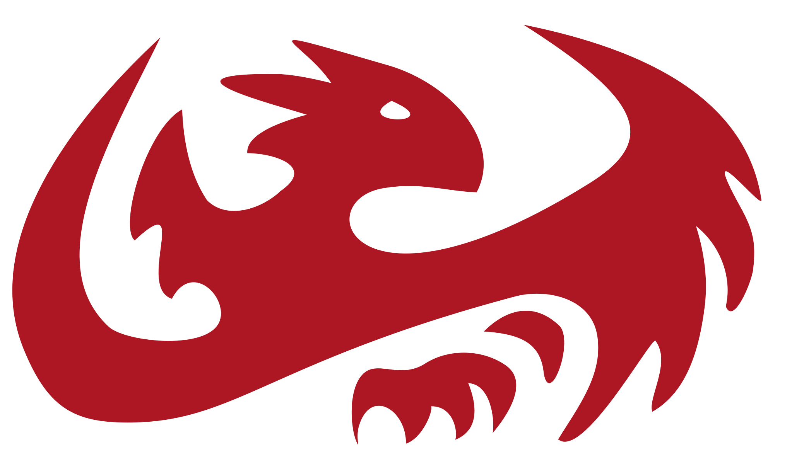
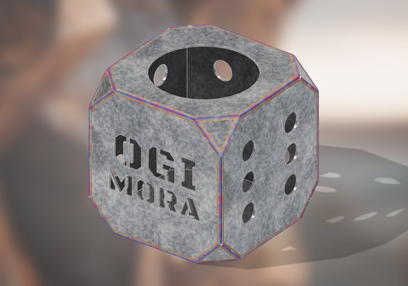

Palenisko
Stalowe palenisko ogrodowe
Cztery ścianki i dno na zamki, bez spawania. Wymiary, pochylenie ścianek, wzór na każdej ściance, własny napis.
Zaprojektuj palenisko
OGIMORADwa darmowe generatory. Ustawiasz wymiary, wzory i napis w przeglądarce, a strona tworzy plik DXF w skali 1:1 – gotowy dla zakładu z laserem albo plazmą.

Palenisko
Cztery ścianki i dno na zamki, bez spawania. Wymiary, pochylenie ścianek, wzór na każdej ściance, własny napis.
Zaprojektuj palenisko
Kostka
Sześć ścianek do zespawania: ćwiczysz spoiny narożne, zostaje kostka do gry, lampion albo ozdoba. Bok 10–70 cm, kropki, liczby, napis, ścięte narożniki.
Zaprojektuj kostkęStrona testowa: pliki tworzy skrypt, bez gwarancji – sprawdź je przed cięciem. Bez kont i ciasteczek. Kontakt: info@ogimora.com